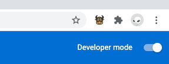
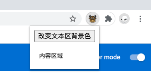
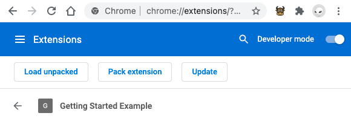
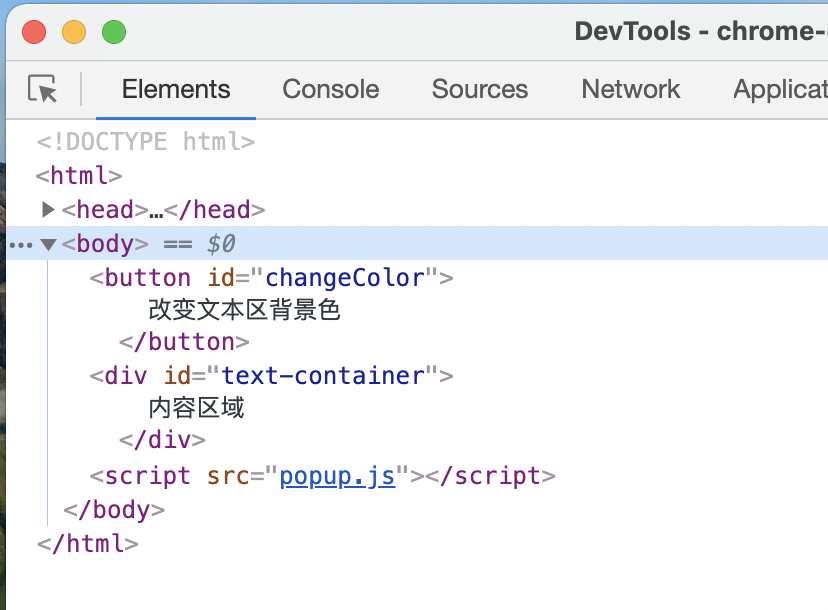
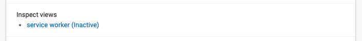
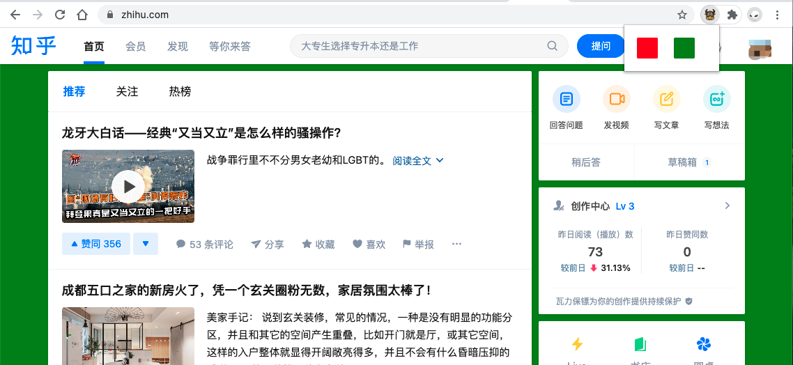
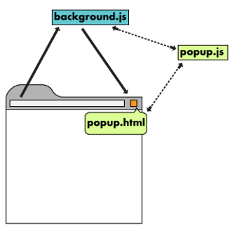

最近接了一个私活儿，需要开发一个浏览器插件，功能还挺复杂。但是查了一圈资料后发现可用度很低，要么过时并且示例不可运行，要么逻辑不清抓不住重点。我有一个观点，能交给别人的知识和技能才是自己的，那我就写一个教程吧。(动笔时间 2020.03.10)
由于中文资料有滞后性，我们直接参考官方的英文原版文档。
https://developer.chrome.com/docs/extensions/mv3/
对重要部分做翻译，对不足的地方做补充和说明。这是一个重在掌握基础的教程，后面我会把私活儿的代码做开源，另附一篇实战教程。
这趴教程的下面部分大体框架直接和官网对应。
这里为想要开发浏览器扩展的开发者提供一些指导和信息参考。
如果你还不确定要不要用浏览器扩展，可以看看这些页面:
当然，如果你想要了解一些实用的切入点，，可以看看这些页面:
一个 Chrome Extensions Manifest V3 包含 background scripts、content scripts,、an options page、UI elements 四部分内容(如果插件够简单有些部分可省略)。
编写一个 Chrome Extensions Manifest V3 从定义 manifest.json 文件开始，它是入口文件，类似于 npm 包的 package.json。
最简单的 manifest.json 是这样的:
{
"name": "Getting Started Example",
"description": "Build an Extension!",
"version": "1.0",
"manifest_version": 3
}
我们新建个文件夹来存放上面 json，再找一个 png 图标(今年是牛年，我找了一个牛的图标)，配置图标引入:
{
"name": "Getting Started Example",
"description": "Build an Extension!",
"version": "1.0",
"manifest_version": 3,
"action": {
"default_icon": "niu.png"
}
}
首先打开 Chrome，More Tools / Extensions / 打开 Developer mode / Load unpacked
把我们刚才新建文件夹选一下。然后一个插件像模像样的出现在了浏览器右上角。

到目前，我们的插件除了摆摆样子还什么都做不了。那是因为我们还没有告诉它要在什么时候做什么事情。
先加一个 service_worker:
{
"background": {
"service_worker": "background.js"
},
"permissions": ["storage"]
}
background.js:
let color = '#3aa757';
chrome.runtime.onInstalled.addListener(() => {
chrome.storage.sync.set({ color });
console.log('Default background color set to %cgreen', `color: ${color}`);
});
这个 js 是运行在后台的，不会对页面发生改变。在插件第一次安装或者插件更新版本时触发，保存一个键值为 color 的数据到 chrome.storage。先把数据存下来，后面介绍怎么用。
然后加一个页面的配置:
{
"action": {
"default_popup": "popup.html"
}
}
popup.html:
<!DOCTYPE html>
<html>
<head>
<meta charset="UTF-8">
<link rel="stylesheet" href="button.css">
</head>
<body>
<button id="changeColor">
改变文本区背景色
</button>
<div id="text-container">
内容区域
</div>
<script src="popup.js"></script>
</body>
</html>
button.css:
body {
width: 123px;
}
button {
cursor: pointer;
}
#text-container {
padding: 10px;
margin: 10px 0;
}
popup.js
let changeColor = document.getElementById("changeColor");
let backgroundColor;
chrome.storage.sync.get("color", ({
color
}) => {
backgroundColor = color;
});
changeColor.addEventListener("click", async () => {
document.getElementById('text-container').style.backgroundColor = backgroundColor;
});
完整代码在 demo-code-1 中，这些代码就可与有这么一个界面:

点击按钮后文字区的背景颜色会改变。
这个 Demo 主要展示了这样几项功能:
写程序少不了调试，下面介绍怎么调试我们的代码。
在 Chrome 的地址栏输入 chrome://extensions/ 并打开后，就是 Extensions 列表了。将 Developer mode 开关打开后可用 Load unpacked 按钮上传 Extension 源码，然后点击我们上传插件的 Details 到插件详情页。后面我们每次修改代码刷新这个页面就可以了，当然也可以手动点击 Update 来更新。如果只是 popup 的修改，是可以直接更新的。

右击 Extension 图标 Inspect Popup 可以调试 popup，非常方便，与开发 pc 网站没有太大差别:

在 Extension 详情页点击 service worker 可以调试 background.js。

当前这个 Demo 的 background.js 中只包含了一个插件安装时触发的事件，并不容易调试到。下面我们再写一个功能更多一点的 Demo。
我们来写一个真正的浏览器插件，其功能是改变当前网页的背景色(用项目网站试了一下操作表单也是可以的)，核心代码在 demo-code-2/popup.js 中:
const redBtn = document.getElementById("redBtn");
redBtn.addEventListener("click", async () => {
let [tab] = await chrome.tabs.query({
active: true,
currentWindow: true
});
chrome.scripting.executeScript({
target: {
tabId: tab.id
},
function() {
document.body.style.backgroundColor = 'red';
// 如果页面中有单选按钮，可以用下面的代码控制其选中
const doms = document.getElementsByClassName('el-radio__original');
for (let i = 0; i < doms.length; i++) {
const item = doms[i];
if (item.value === 'female') {
item.checked = true;
}
else if (item.value === 'male') {
item.checked = false;
}
}
},
});
});
使用效果是这样的:

Chrome Extensions Manifest V3 适用于 Chrome 88 及以上的 chrome。
注: 以下 Chrome Extensions Manifest V3 简称为 MV3。
MV3 当前最新版发布于 2021.01.19。
Chrome Extensions 是 Chrome 强大的组成部分，每天都有数以百万级的插件被下载。嗯，总之“很牛”就完了。
浏览器插件可以获得用户的更多授权，从而提供更强大的功能为用户服务。
MV3 将原来的 background pages 替换为了 service workers。
service workers 是一个服务器与浏览器之间的中间人角色，如果网站中注册了 service worker 那么它可以拦截当前网站所有的请求，进行判断（需要编写相应的判断程序），如果需要向服务器发起请求的就转给服务器，如果可以直接使用缓存的就直接返回缓存不再转给服务器。从而大大提高浏览体验。
Service worker 运行在 worker 上下文，不能访问DOM。
什么是 Extensions？
它是一个跑在 Chrome 浏览器中的一个应用，可以整合第三方网站或服务，并自定义浏览器行为。
开发的主要语言为 JavaScript，部分采用 html、css、图片等。
每个 Extension 必须要有一个 single purpose。
当成工具查阅的 API 手册: https://developer.chrome.com/docs/extensions/reference/
这里是一个 github 仓库，汇集了一些样例。如果在这里能找到类似的样例，直接拿下来改改就能有一个自己的 chrome extension 了。
吐槽一下，这里的文档写的奇烂。与代码不符的，链接无效的，看这部分文档就像从一堆烂苹果中找一个完整的。
提供不同应用场景的入口汇总。
这里有一份全量的 manifest.json 字段配置文件。
{
// Required
"manifest_version": 3,
"name": "My Extension",
"version": "versionString",
// Recommended
"action": {...},
"default_locale": "en",
"description": "A plain text description",
"icons": {...},
// Optional
"action": ...,
"author": ...,
"automation": ...,
"background": {
// Required
"service_worker":
},
"chrome_settings_overrides": {...},
"chrome_url_overrides": {...},
"commands": {...},
"content_capabilities": ...,
"content_scripts": [{...}],
"content_security_policy": "policyString",
"converted_from_user_script": ...,
"current_locale": ...,
"declarative_net_request": ...,
"devtools_page": "devtools.html",
"differential_fingerprint": ...,
"event_rules": [{...}],
"externally_connectable": {
"matches": ["*://*.example.com/*"]
},
"file_browser_handlers": [...],
"file_system_provider_capabilities": {
"configurable": true,
"multiple_mounts": true,
"source": "network"
},
"homepage_url": "http://path/to/homepage",
"host_permissions": [...],
"import": [{"id": "aaaaaaaaaaaaaaaaaaaaaaaaaaaaaaaa"}],
"incognito": "spanning, split, or not_allowed",
"input_components": ...,
"key": "publicKey",
"minimum_chrome_version": "versionString",
"nacl_modules": [...],
"natively_connectable": ...,
"oauth2": ...,
"offline_enabled": true,
"omnibox": {
"keyword": "aString"
},
"optional_permissions": ["tabs"],
"options_page": "options.html",
"options_ui": {
"chrome_style": true,
"page": "options.html"
},
"permissions": ["tabs"],
"platforms": ...,
"replacement_web_app": ...,
"requirements": {...},
"sandbox": [...],
"short_name": "Short Name",
"storage": {
"managed_schema": "schema.json"
},
"system_indicator": ...,
"tts_engine": {...},
"update_url": "http://path/to/updateInfo.xml",
"version_name": "aString",
"web_accessible_resources": [...]
}
chrome extension 是由 HTML、CSS、JavaScript、图片、和其他文件压缩而成的包，可以安装在 PC 和 手机 的 Chrome 浏览器上。

background script 是 extension 的事件控制器，可以监听浏览器事件，是静默躺在浏览器后台中的进程，直到被定义的事件唤醒，然后执行定义好的逻辑。事件监听的定义需要使用 declarative content
popup.html 定义用户界面，可以直接写页面，也可以调用 tabs.create 或 window.open()
popup 在页面外是孤立无援的，我们可以派一个间谍打入页面作为内应，这个间谍就叫 Content script，它可以注入到页面中，通过 messages 模块与 popup 和 background 通信。